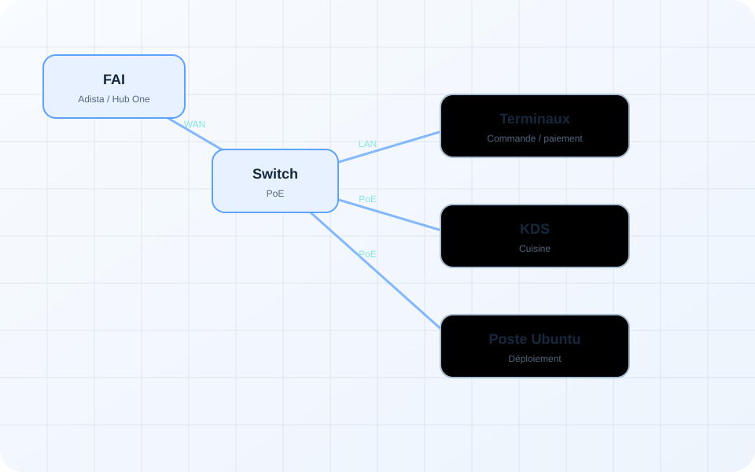
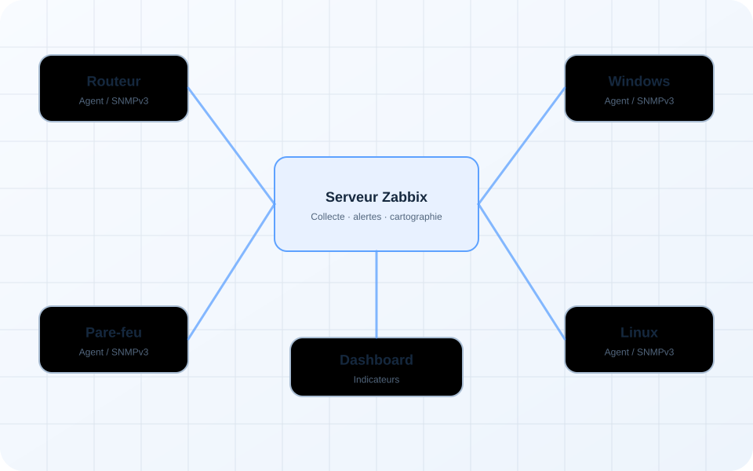

Projet principal01
Infrastructure multi-bâtiments sécurisée
Conception d’une architecture résiliente avec segmentation, redondance réseau, virtualisation et supervision.
Administrateur Systèmes & Réseaux junior, titulaire d’un BTS SIO SISR et admis en Licence 3 Informatique. Je transforme des besoins techniques en infrastructures structurées, sécurisées et documentées.
Des expériences de terrain et des architectures réalisées en laboratoire, présentées avec leur contexte, les choix techniques et les compétences mobilisées.
Conception d’une architecture résiliente avec segmentation, redondance réseau, virtualisation et supervision.

Interventions multi-sites : bascule FAI, brassage, configuration IP et validation de la connectivité.

Centralisation des métriques, surveillance SNMPv3, alertes et cartographie des équipements.
Je construis mes projets comme une intervention réelle : le besoin d’abord, puis l’architecture, l’implémentation, les tests et la documentation.
Identifier les contraintes, les utilisateurs, les flux et le niveau de disponibilité attendu.
Structurer les réseaux, les services, la sécurité, la redondance et les sauvegardes.
Configurer les systèmes, appliquer le principe du moindre privilège et documenter les changements.
Valider la connectivité, le basculement, la disponibilité des services et la remontée des alertes.
Je recherche une alternance de 12 mois en administration systèmes et réseaux, infrastructure, support, cloud ou cybersécurité.